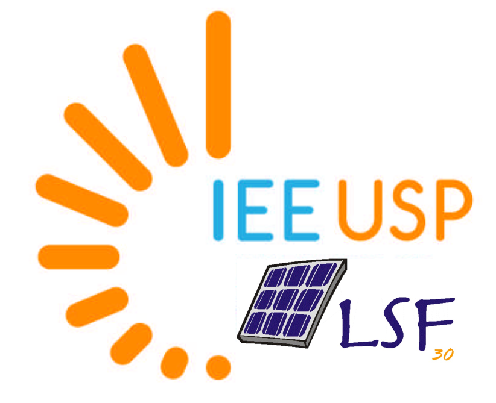
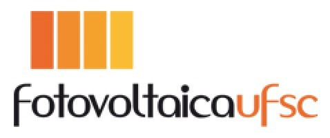
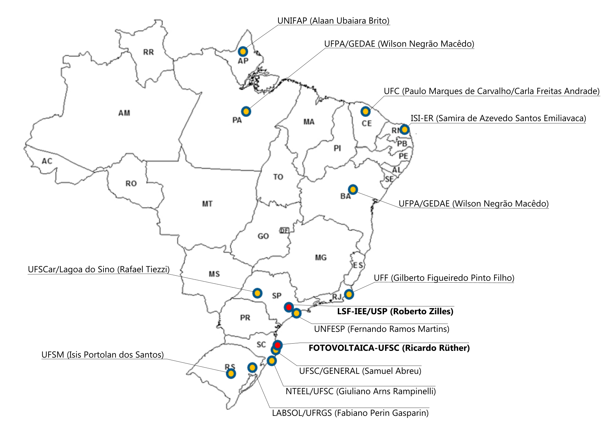

INÍCIO
O INCT de Desenvolvimento de Aplicações da Energia Solar Fotovoltaica é uma rede de pesquisa que reúne 14 instituições de pesquisa do Brasil. Está focado na inovação tecnológica de aplicações da energia solar fotovoltaica.

(Roberto Zilles)
Coordenação

(Ricardo Ruther)
Vice-coordenação

Sobre
O INCT de Desenvolvimento das Aplicações da Energia Solar Fotovoltaica (INCT-DAESF) é uma rede nacional voltada à pesquisa científica, tecnológica e à inovação em sistemas fotovoltaicos e suas aplicações no suprimento energético de sistemas isolados e interligados no Brasil. O Instituto reúne 14 instituições de ciência e tecnologia atuantes do país, formando uma rede colaborativa que concentra significativa expertise e infraestrutura na área. Mais do que um agrupamento de laboratórios, o INCT-DAESF consolida parcerias já estabelecidas, potencializando os resultados por meio de uma atuação integrada e interdisciplinar.
Seu objetivo é desenvolver pesquisa de alto nível, promover a inovação e formar recursos humanos qualificados, contribuindo para a transição do Brasil para uma oferta energética sustentável. O Instituto atua em articulação com os setores empresarial e governamental, promovendo a transferência de conhecimento, o desenvolvimento de soluções tecnológicas e a formulação de políticas públicas.
Com forte cooperação internacional e interação com o setor produtivo, o INCT-DAESF busca ampliar o impacto científico, tecnológico, econômico e socioambiental da energia solar fotovoltaica, contribuindo para o avanço dessa tecnologia estratégica no país. Suas atividades incluem desde a modelagem e a integração de sistemas até aplicações inovadoras, como armazenamento de energia, hidrogênio verde, mobilidade elétrica, sistemas híbridos e sistemas agrovoltaicos.
Grupos Associados
O INCT-DAESF tem sua sede na Universidade de São Paulo (USP), por meio do Instituto de Energia e Ambiente, no Laboratório de Sistemas Fotovoltaicos (LSF-IEE/USP), que dispõe de infraestrutura laboratorial e suporte administrativo para o desenvolvimento das atividades do Instituto. A vice-sede está vinculada à Universidade Federal de Santa Catarina (UFSC), por meio do grupo Fotovoltaica/UFSC, referência nacional na área.
Coordenação: Prof. Dr. Roberto Zilles (LSF-IEE/USP)
Vice-coordenação: Prof. Dr. Ricardo Rüther (Fotovoltaica/UFSC)
O INCT-DAESF é composto por grupos de pesquisa associados distribuídos em diferentes instituições brasileiras, com seus respectivos líderes:
| Grupo / Instituição | Líder | Lattes |
|---|---|---|
| LSF-IEE/USP | Prof. Roberto Zilles | Currículo |
| FOTOVOLTAICA/UFSC | Prof. Ricardo Rüther | Currículo |
| NTEEL/UFSC | Prof. Dr. Giuliano Arns Rampinelli | Currículo |
| LABSOL/UFRGS | Prof. Dr. Fabiano Perin Gasparin | Currículo |
| GEDAE/UFPA | Prof. Wilson Negrão Macêdo | Currículo |
| IFSC (GENERAL) | Prof. Samuel Luna de Abreu | Currículo |
| LAF/UFF | Prof. Dr. Gilberto Figueiredo Pinto Filho | Currículo |
| LER/UNIFAP | Prof. Dr. Alaan Ubaiara Brito | Currículo |
| ISI-ER/SENAI-RN | Dra. Samira de Azevedo Santos Emiliavaca | Currículo |
| LAERO/LEA/UFC | Prof. Dr. Paulo Marques Carvalho | Currículo |
| UFSCar (Campus Lagoa do Sino) | Prof. Dr. Rafael Tiezzi | Currículo |
| UFBA | Prof. Dr. Osvaldo Soliano Pereira | Currículo |
Esses grupos compõem uma rede colaborativa que integra competências complementares e infraestrutura avançada, permitindo o desenvolvimento de projetos cooperativos em escala nacional e internacional.
Pesquisa
O INCT-DAESF estrutura suas atividades em um conjunto de pesquisas interdependentes, organizadas de forma colaborativa entre diferentes instituições de ensino e pesquisa. Cada meta é coordenada por um laboratório associado e é executada com a participação integrada dos demais grupos da rede.
| Eixo | Descrição |
|---|---|
| Modelagem e qualificação de sistemas FV | LABSOL–UFRGS, FOTOVOLTAICA–UFSC e LSF–IEE/USP. |
| Avaliação termoenergética de edificações | LAF–UFF e UFSM. |
| Armazenamento de energia | FOTOVOLTAICA–UFSC, LSF–IEE/USP, GEDAE–UFPA e GENERAL–IFSC. |
| Hidrogênio verde | FOTOVOLTAICA – UFSC. |
| Previsão do recurso solar e calibração | UNIFESP, SENAI ISI-ER/LES-RN e LSF–IEE/USP. |
| Integração à rede e minirredes | NTEEL–UFSC, GEDAE–UFPA e LER–UNIFAP. |
| Sistemas híbridos | LAERO/LEA – UFC. |
| Sistemas agrovoltaicos | FOTOVOLTAICA – UFSC e LSF – IEE/USP. |
| Ensaios experimentais e conformidade | LSF–IEE/USP, LABSOL–UFRGS, FOTOVOLTAICA–UFSC e GEDAE–UFPA. |
| Comunidades isoladas | UFPA e UNIFAP. |
| Estudos econômicos e regulatórios | UFBA e pela UFSCar. |
| Formação de recursos humanos e difusão | Meta transversal que envolve todos os grupos participantes. |
Difusão e Eventos
A estratégia de difusão do INCT-DAESF baseia-se na ampla disseminação do conhecimento científico, tecnológico e aplicado gerado pelo Instituto, visando alcançar a comunidade acadêmica, o setor produtivo e a sociedade em geral.
As ações incluem a publicação de resultados em periódicos científicos de alto impacto e em revistas técnicas, bem como a participação em conferências nacionais e internacionais. Complementarmente, o INCT promove seminários, eventos e transmissões online, ampliando o acesso ao conhecimento e incentivando a formação de novos pesquisadores.
A interação com o setor produtivo é fortalecida por meio de parcerias com associações e empresas do setor energético, o que favorece a transferência de tecnologia e a aplicação prática dos resultados. Além disso, o Instituto investe na divulgação científica em mídias digitais e canais abertos, contribuindo para a popularização da ciência e para o engajamento da sociedade na transição energética.
Oportunidades
O INCT-DAESF oferece diversas oportunidades de participação e atuação para estudantes e profissionais interessados no desenvolvimento científico e tecnológico na área de energia solar fotovoltaica.
Para estudantes
- Bolsas de Iniciação Científica (IC)
- Participação em projetos experimentais, de modelagem e estudos aplicados
- Bolsas de Desenvolvimento Tecnológico e Industrial (DTI)
Para pós-graduação e profissionais
- Mestrado e Doutorado em temas estratégicos
- Projetos cooperativos nacionais e internacionais
- Mobilidade acadêmica e ambiente multidisciplinar
Instituições e Parceiros
O INCT-DAESF estabelece uma ampla rede de parcerias nacionais e internacionais, envolvendo instituições de pesquisa e empresas estratégicas, com o objetivo de fortalecer a pesquisa, promover a inovação e ampliar o impacto das aplicações da energia solar fotovoltaica no Brasil.